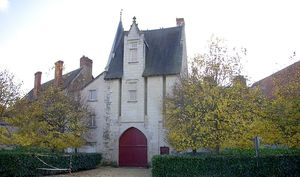
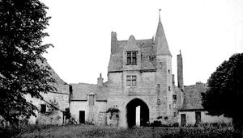
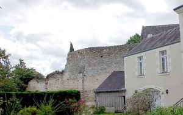
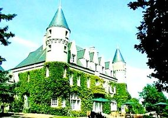
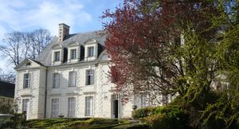
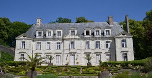
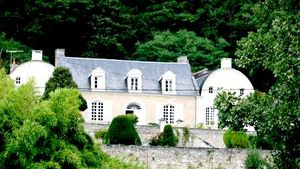

Recensement Jean-Claude Truffet
| Département | 37 — Indre-et-Loire |
| Canton | Langeais |
| Commune | Saint-Michel sur loire |
| Type d'édifice | Château |
| Période d'origine | XIV-XVI-XVII |







A st-Michel sur Loire le château de St-Michel, Montbrun, de Plancoury, le vieux château et le manoir de Blanchereau. ST-MICHEL sur-LOIRE au XVe siècle; érigée en châtellenie en 1518 avec la famille Le Roy; clos de muraille en 1527, incendié en 1568 par les huguenots puis restauré; François Le Roy meurt sans héritier direct en 1606 et la famille de Rouville en hérite, Saint Michel est laissé à l'abandon durant une trentaine d'années. Il est vendu sur saisie à la criée en 1634 à Claude Bouthillier, surintendant des finances de Louis XIII,on le surnomme le vieux château. Le domaine a appartenu à Yolande d'Aragon, reine de Naples, qui le revendit à Jean IV de Bueil. La famille d'Espinay le vendit ensuite à Charles d'Albert, duc de Luynes. Dans les années 1920, il appartenait au sénateur Germain qui y effectua quelques modifications et fit construire l'aile Est néogothique flanquant le châtelet d'entrée. On ne reconnaît plus grand chose de l'édifice représenté par Gaignières en 1699 : subsistent aujourd'hui le châtelet d'entrée édifié au XVe siècle et son escalier à vis hors-oeuvre qui dessert également l'aile moderne rajoutée dans les années vingt, une grange à pignon en rondelis située à l'ouest, la base voûtée d'une tour de défense quadrangulaire et une partie du mur d'enceinte d'origine. Ce mur est reconnaissable à l'est du châtelet et plusieurs constructions sont venues s'y accoler, en particulier l'aile moderne. On le retrouve également à l'extrémité du coteau dont il contient en partie la poussée. Une poterne permet de protéger l'escalier d'accès au bas de ce mur.
Château de Montbrun du XXe siècle. Manoir de Banchereau du XVIIe siècle pas d'information pour ses deux châteaux. PLANCOURY, un ancien fief relevant de la baronnie de St Michel sur Loire. Plusieurs seigneurs sy sont succédé jusquau très respecté André Coudreau, trésorier général de France et maire de Tours, qui fera construire, dans la deuxième moitié du XVIIe, le château Planchoury. En 1719, cette magnifique demeure et son domaine seront vendus à François Girault. Quelques trente années plus tard, A la mort du maître des lieux, sa veuve le vendra à un certain Eugène Sébastien Polak (1858). le nouveau propriétaire en doublera la superficie habitable, fut, entre 1989 et 2006, le premier musée européen de la marque automobile américaine Cadillac, regroupant plus de soixante-dix véhicules dexception, aujourdhui devenu collection privée consacrée aux Cadillac avec plus de 80 modèles. VIEUX CHATEAU dominant la Loire, a été construit au XIVe siècle, sur les bases dun très ancien château du Xe siècle dont il reste les vestiges dun mur denceinte et dune tour de guet. Ancienne résidence de Yolande dAragon, reine dAnjou, tante de Charles VII, elle a été aménagée en demeure familiale. La grande chambre médiévale au-dessus du porche dentrée et le salon, décorés dobjets anciens et de souvenirs de famille, accueillent les hôtes du château.
St-Michel; Famille de Claude Bouthillier Plancoury ; Famille de François Girault.
"
A st-Michel sur Loire le château de St-Michel, Montbrun grav-4, de Plancoury grav-5-6 et le vieux château gracv 1-2-3 et le manoir de Blanchereau grav 7.